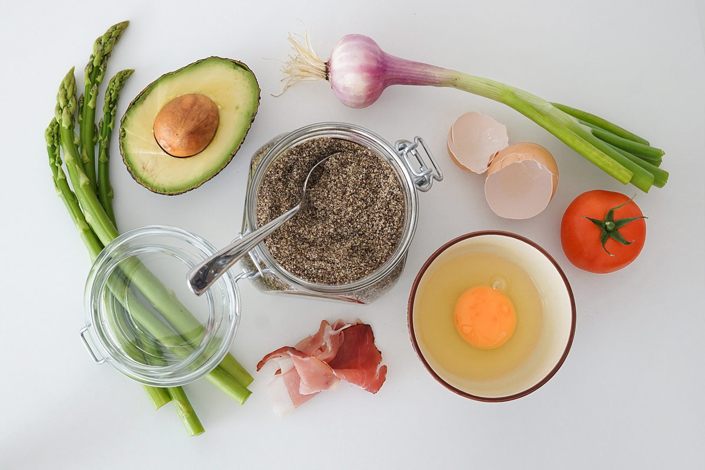
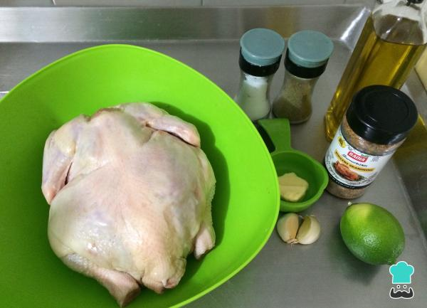

Receta de Pollo Asado
tipico y delicioso
Ingredientes

- 1 pollo entero
- 2 cucharadas de aceite de oliva
- 1 limón
- 2 dientes de ajo
- 1 cucharada de sal
- 1 cucharada de pimienta negra
Preparacion

- Preparar el horno precalentándolo a 200°C.
- Mezclar el aceite de oliva, el jugo del limón, el ajo picado, la sal y la pimienta en un tazón pequeño.
- Lavar el pollo y retirar las vísceras. Con una brocha, cubrir el pollo con la mezcla de aceite y limón.
- Colocar el pollo en una bandeja para hornear y hornéarlo durante aproximadamente 1 hora y media,hasta
que esté dorado y cocido completamente.
- Ahora solo te queda servir y Puedes acompañarlo con ensalada, arroz, papas, o cualquier otro
acompañamiento
que prefieras.